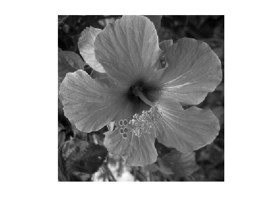
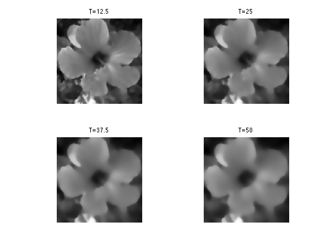
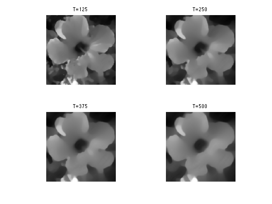
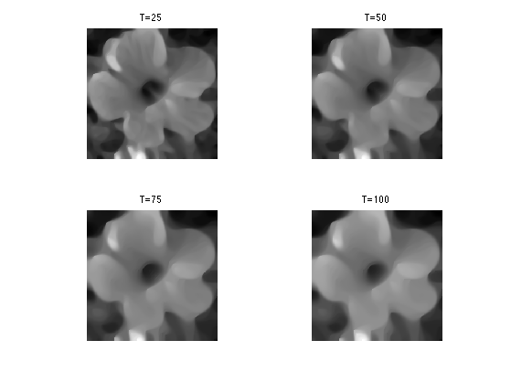
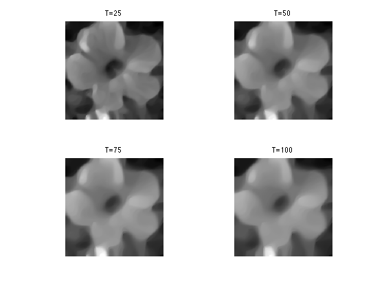

Non-Linear Diffusion Flows
This tours details non-linear diffusion PDEs. A good reference for diffusion flows in image processing is [Weickert98].
Contents
Installing toolboxes and setting up the path.
You need to download the following files: signal toolbox and general toolbox.
You need to unzip these toolboxes in your working directory, so that you have toolbox_signal and toolbox_general in your directory.
For Scilab user: you must replace the Matlab comment '%' by its Scilab counterpart '//'.
Recommandation: You should create a text file named for instance numericaltour.sce (in Scilab) or numericaltour.m (in Matlab) to write all the Scilab/Matlab command you want to execute. Then, simply run exec('numericaltour.sce'); (in Scilab) or numericaltour; (in Matlab) to run the commands.
Execute this line only if you are using Matlab.
getd = @(p)path(p,path); % scilab users must *not* execute this
Then you can add the toolboxes to the path.
getd('toolbox_signal/'); getd('toolbox_general/');
Non-linear Second-order Parabolic PDEs
This tour defines PDE flows that are non-linear extension of the heat equation. Non-linearity is crucial to produce edge-aware flows that do not blur the edges.
It is also important to produce contrast invariant and affine invariant flows.
These flows can be written as \[ \pd{f_t}{t}(x) = G(\nabla f_t(x), \nabla^2 f_t(x)). \] with \(f_0\) defined at time \(t=0\) (whith the slight modification that a blurring is introduced in the Perona-Malick flow to stabilize it).
They are discretized in space by considering a discrete image of \(N = n \times n\) pixels.
n = 256;
We use finite difference operators \(\nabla\) and \(\text{div}=-\nabla^*\) with periodic boundary conditions.
Load an image \(f_0 \in \RR^N\), that will be used to initialize the flow at time \(t=0\).
name = 'hibiscus';
f0 = load_image(name,n);
f0 = rescale( sum(f0,3) );
Display it.
clf; imageplot(f0);
The flow is discretized in time using an explicit time-stepping \[ f^{(\ell+1)}(x) = f^{(\ell)}(x) + \tau G(\nabla f^{(\ell)}(x), \nabla^2 f^{(\ell)}(x)). \] Here \(\tau>0\) should be small enough, and \(f^{(\ell)}\) produces an approximation of \(f_t\) at time \(t=\ell\tau\).
Convolutions can be computed in \(O(N\log(N))\) operations using the FFT, since \[ g = f \star h \qarrq \forall \om, \quad \hat g(\om) = \hat f(\om) \hat h(\om). \]
cconv = @(f,h)real(ifft2(fft2(f).*fft2(h)));
Define a Gaussian blurring kernel of width \(\si\): \[ h_\si(x) = \frac{1}{Z} e^{ -\frac{x_1^2+x_2^2}{2\si^2} }\] where \(Z\) ensures that \(\hat h_\si(0)=1\).
t = [0:n/2 -n/2+1:-1]; [X2,X1] = meshgrid(t,t); normalize = @(h)h/sum(h(:)); h = @(sigma)normalize( exp( -(X1.^2+X2.^2)/(2*sigma^2) ) );
Set the value of \(\sigma>0\).
sigma = .5;
Define blurring operator.
blur = @(f)cconv(f,h(sigma));
Perona-Malik Flow
The Perona-Malik non-linear diffusion is defined as \[ \pd{f_t}{t} = \text{div}\pa{ g_\la( \norm{\nabla f_t^\si} ) \nabla f_t } \] where \(f^\si = f \star h_\si\).
This PDE was introduced in [PerMal90].
Here, \(g_\la : \RR^+ \rightarrow \RR^+\) is a non-increasing function, that wechose in the following as \[ g_\la(s) = \frac{1}{\sqrt{1 + (s/\la)^2}}. \]
g = @(s,lambda)1./sqrt( 1+(s/lambda).^2 );
Note that in the limit \(\la \rightarrow +\infty\), one recovers the linear heat equation \[ \pd{f_t}{t} = \Delta f_t \] where \(\Delta=\text{div} \circ \nabla\) is the Laplacian.
Define \(A(f) = \norm{\nabla f^\si}\).
amplitude = @(u)repmat( sqrt( sum(u.^2,3) ), [1 1 2]); A = @(f)amplitude(grad(blur(f)));
Initialize the solution at time \(t=0\).
f = f0;
Set the value of \(\lambda\).
lambda = .01;
Set the value of the descent step size \(\tau>0\).
tau = .2;
Perform one time stepping.
f = f + tau * div( g(A(f),lambda) .* grad(f) );
Final time.
T = .5/lambda;
Number of iteration to reach this final time.
niter = ceil(T/tau);
Exercice 1: (check the solution) Implement the Perona-Malick diffusion flow for \(\la = 10^{-2}\).
exo1;
Exercice 2: (check the solution) Implement the Perona-Malick diffusion flow for \(\la = 10^{-3}\).
exo2;
Mean Curvature Flow
In the limit that \(\la \rightarrow +\infty\) and \(\si \rightarrow 0\) the Perona-Malick flow becomes \[ \pd{f_t}{t} = \text{curv}(f_t) \] where \[ \text{curv}(f) = \text{div}\pa{ \frac{\nabla f}{\norm{\nabla f}} }. \] One can show that \(\text{curv}(f)(x)\) is the curvature at location \(x\) of the level set \(\enscond{y}{f(y)=f(x)}\).
This flow is the gradient descent flow associated to the total variation \[ J(f) = \int_{\RR^2} \norm{\nabla f(x)} d x, \] which can be extended to non-smooth functions of bounded variations. Indeed, a (sub)gradient of \(J\) is \( -\text{curv}(f) \).
Total variation regularization was introcued in []
A closely related flow is the so-called mean curvature flow \[ \pd{f_t}{t} = \norm{\nabla f_t} \text{curv}(f_t). \] One can show that this flow is contrast-invariant. This means that for any non-decreasing function \(\phi : \RR \rightarrow \RR\), \(\phi \circ f_t\) is also a solution of the PDE (possibly up to a re-parameterization of the time variable).
One can show that any contrast-invariant flow can be written as \[ \pd{f_t}{t} = \norm{\nabla f_t} \psi( \text{curv}(f_t) ) \] for a non-decreasing function \(\psi : \RR \rightarrow \RR\).
Implement the curv operator. We use a small \(\epsilon\) to avoid division by 0.
epsilon = 1e-6; amplitude = @(u)sqrt(sum(u.^2,3)+epsilon^2); normalize = @(u)u./repmat( amplitude(u), [1 1 2]); curv = @(f)div( normalize(grad(f)) );
Exercice 3: (check the solution) Implement the mean curvature flow.
exo3;
Affine Invariant Flow
A flow is affine invariant if \(f_t \circ A\) is also a solution of the PDE (possibly up to a re-parameterization of the time variable).
The only affine invariant and contrast invariant flow is \[ \pd{f_t}{t} = \norm{\nabla f_t} \text{curv}(f_t)^{1/3}. \] where \(s^{1/3}= \text{sign}(s) \abs{s}^{1/3}\).
This result was discovered independently in [AlvGuiLiMo93] and [SapTann93]
Exercice 4: (check the solution) Implement the affine-invariant curvature flow.
exo4;
Bibliography
- [PerMal90] P. Perona and J. Malik, Scale-space and edge detection using anisotropic diffusion. IEEE Transactions on Pattern Analysis and Machine Intelligence, 12 (7): 629-639, 1990.
- [AlvGuiLiMo93] L. Alvarez, F. Guichard, P-L. Lions, J-M. Morel, Axioms and fundamental equations of image processing, Arch. for Rational Mechanics, Vol. 123, No. 3 pp. 199-257, 1993
- [SapTann93] S. Sapiro, and A. Tannenbaum, Affine invariant scale space, Int. Journal of Computer Vision, 11(1):25-44, 1993.
- [Weickert98] Joachim Weickert, Anisotropic Diffusion in Image Processing, ECMI Series, Teubner-Verlag, Stuttgart, Germany, 1998.
- [PerMal90] P. Perona and J. Malik, Scale-space and edge detection using anisotropic diffusion, IEEE Transactions on Pattern Analysis and Machine Intelligence, 12 (7): 629-639, 1990.
- [ROF92] L. Rudin, S. Osher and E. Fatemi, Nonlinear total variation based noise removal algorithms, Physica D 60: 259?268, 1992.